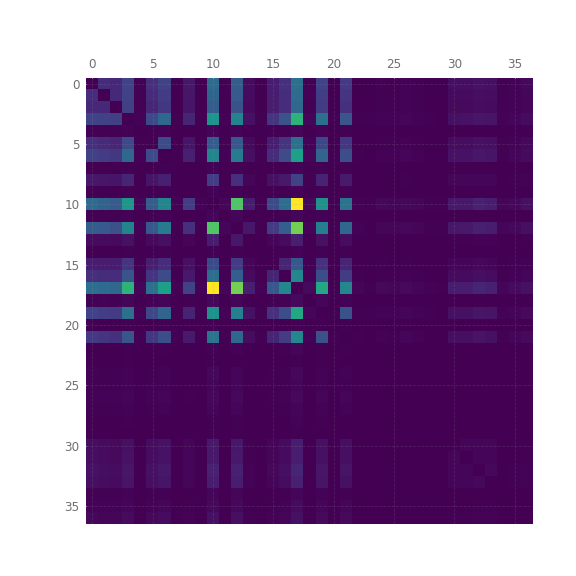
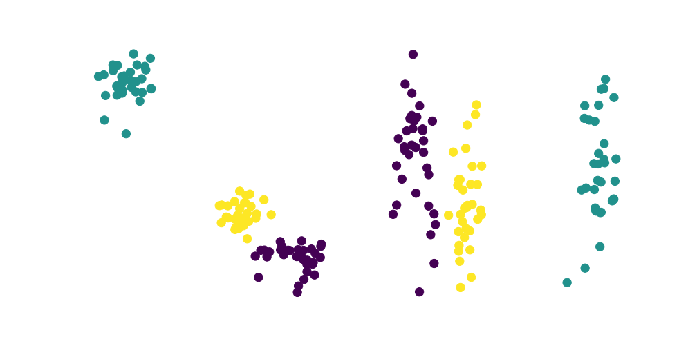
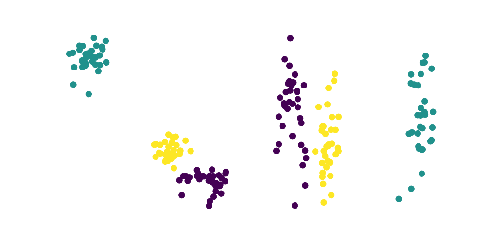

Resumos 0: PageRank
Esta é uma anotação introdutória ao problema de resumir textos, o ponto principal abordado aqui será a dificuldade de identificar o que é relevante, para isso usei o textrank, não entrarei em muitos detalhes sobre esse algoritmo, tratando de forma intuitiva a idéia geral que será mais aprofundada em anotações posteriores.
PageRank foi o primeiro algoritmo usado pelo google para rankear os links de sua busca, logicamente o google evoluiu neste tempo todo e usa uma combinação de vários algoritmos e não o pagerank puro, aqui o usaremos para rankear os parágrafos de um texto da wikipedia.
Funcionamento
Não entrarei em muitos detalhes sobre o algoritmo, então explicando de forma superficial temos o fato do pagerank se valer de um grafo, e ao considerar o grau de cada nó, ou seja a quantidade de conexões de cada nó, e um peso atribuído a cada conexão, teremos um ranking de importância. Até mesmo explicando desse modo já imaginamos como o algoritmo se aplica bem a links entre páginas na internet, mas para textos ele realmente não é tão adequado porém é didático como algo introdutório.
Os passos do "resumo" que na verdade é um rankeamento:
Implementação
Resolvi o skip-gram já treinado[1]_ e a página da wikipédia sobre Alan Turing como já feito antes, o processamento realmente começa criando listas com os valores correspondentes a cada palavra indicado pelo skip-gram.
sentences = [] for paragraph in text: sentences.append([word2id[word] for word in paragraph if word in id2word])
O passo seguinte é criar uma matriz quadrada onde cada lado tem o nº de parágrafos, preenchi a matriz da seguinte forma:
for i, x in enumerate(sentences): for j, y in enumerate(sentences): if i != j : similarity_matrix[i, j] = np.sum( cosine_similarity(data[x],data[y]) ).item(0)
O que é feito acima é apenas comparar a similaridade de cossenos entre cada parágrafo, indicando de alguma forma algum nível de similaridade, de modo que o parágrafo com maior índice de similaridade em relação aos demais será aquele que melhor representa o conjunto.
Essa é uma matriz simétrica que seŕá lida como uma matriz adjacente de um grafo, cada linha e coluna serão nós e cada corrdenada indica o peso do vértice que liga cada nó, um dos problemas dessa estratégia é que todos os nós terão o mesmo grau, já que todos se ligam a todos, isso acaba inutilizando o uso do grau de cada nó para o pagerank, tendo como único parâmetro a considerar o peso dos vértices.
G = nx.from_numpy_array(similarity_matrix) scores = nx.pagerank(G) original = pickle.load( open("original_text-Alan_Turing.pickle", "rb") ) word_rank = sorted( [(scores[i],i, s) for i, s in enumerate(original)], key=lambda x:x[0], reverse=True ) qnt_lines = 3 top = sorted(word_rank[:qnt_lines], key=lambda x:x[0]) for i in range(qnt_lines): print(f"-- parágrafo do resumo: {i} | parágrafo original: {top[i][1]}") print(top[i][2], end="\n\n")
Na saída do código acima podemos reparar que a ordem de importância dada a cada parágrafo não necessariamente está relacionado ao seu tamanho ou à sua posição no texto: .. epigraph:
-- parágrafo do resumo: 0 | parágrafo original: 19
Por muitos anos, foram feitas campanhas que envolveram ativistas da tecnologia da informação, do meio político e do público LGBT. Em 11 de setembro de 2009, 55 anos após sua morte, o primeiro-ministro do Reino Unido, Gordon Brown, seguindo um pedido feito através de uma petição direcionada ao governo britânico, pediu desculpas formais em nome do governo pelo tratamento preconceituoso e desumano dado a Turing, que o levou ao suicídio. Em 24 de dezembro de 2013, passou a ter efeito a Real Prerrogativa do Perdão, concedida a Turing pela Rainha Elizabeth II, a pedido do ministro da justiça do Reino Unido, Chirs Grayling, depois que uma petição criada em 2012 obteve mais de 37.000 assinaturas solicitando o devido perdão.
-- parágrafo do resumo: 1 | parágrafo original: 3
A homossexualidade de Turing resultou em um processo criminal em 1952, pois atos homossexuais eram ilegais no Reino Unido na época, e ele aceitou o tratamento com hormônios femininos e castração química, como alternativa à prisão. Morreu em 1954, algumas semanas antes de seu aniversário de 42 anos, devido a um aparente autoadministrado envenenamento por cianeto, apesar de sua mãe (e alguns outros) terem considerado sua morte acidental. Em 10 de setembro de 2009, após uma campanha de internet, o primeiro-ministro britânico Gordon Brown fez um pedido oficial de desculpas público, em nome do governo britânico, devido à maneira pela qual Turing foi tratado após a guerra. Em 24 de dezembro de 2013, Alan Turing recebeu o perdão real da rainha Elizabeth II, da condenação por homossexualidade.
-- parágrafo do resumo: 2 | parágrafo original: 12
Em 1938, Turing se uniu ao GC&CS, o braço de decodificação de mensagens da inteligência britânica, para efetuar a Criptoanálise da Máquina Enigma. O Enigma era uma máquina de codificação que mudava seus códigos diariamente, obrigando a que o projeto de decifração se tornasse bastante rápido. Após o Reino Unido iniciar a Segunda Guerra Mundial ao declarar guerra à Alemanha em 1939, Turing foi direcionado para o quartel da GC&CS em Bletchley Park. A partir de uma máquina decodificadora polonesa, Turing projetou a Bomba eletromecânica ("Bombe"), um equipamento eletromecânico que ajudaria a decriptar as mensagens do Enigma e foi montada em 1940. Novas Bombas foram construídas após Turing e sua equipe pedirem apoio a Winston Churchill, e mais de duzentas operavam ao fim da Guerra em 1945. Turing também introduziu sua equipe em Bletchley Park ao matemático Tommy Flowers, que em 1943 projetou o Colossus, um computador primitivo que ajudou a decodificar outra máquina criptográfica alemã, o Lorenz.
Logicamente eu poderia ter usado frases em vez de parágrafos para fazer o resumo, talvez até fizesse mais sentido chamar a saída do código de resumo, mas resolvi usar parágrafos inteiros por considerar que a idéia fica mais clara assim e ao comparar com o texto original, fica mais visualmente evidente como se deu o trabalho do pagerank, nos próximos posts sobre este tópico serão mostradas redes neurais que fazem um trabalho bem mais coerente, logicamente usarei redes neurais recorrentes e o seq2seq, portanto recomendo que veja as anotações que escrevi sobre esses temas:
GRU e LSTM seq2seq: introdução
---
_[1] http://www.nilc.icmc.usp.br/nilc/index.php/repositorio-de-word-embeddings-do-nilc


 
